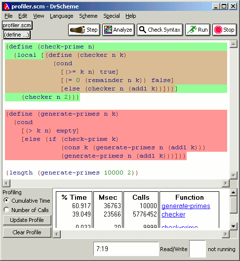
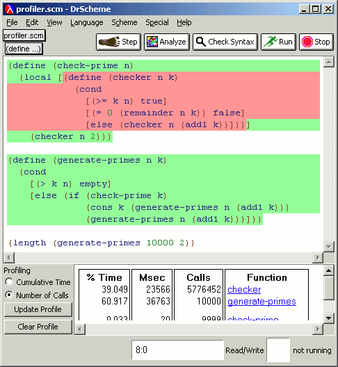

DrScheme includes a procedure-level execution profiler. The profiler gathers information during a program run, which it displays graphically. The profiler can order output according to the number of calls or the time spent in execution. To invoke the profiler:
Tell DrScheme to generate profiling information. To do this, choose to Show Details in the Language | Choose Language ... menu, and select profiling in the Dynamic Properties panel. (You do not need to follow this step unless you change the language configuration.)
Run the program.
Select the Show | Show Profile menu entry.
A profile includes both a table and a color coding of the program text: hotter colors indicate greater use, colder colors indicate less use. To change the colors, use the Profiling tab in Edit | Preferences ....
The two images below are from the same run of the same program, which generates a list of primes. The first image shows the result of choosing time profiling (the default):
|  |
The second image shows the result of profiling by call counts instead:
|  |